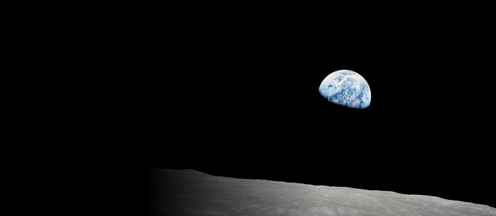
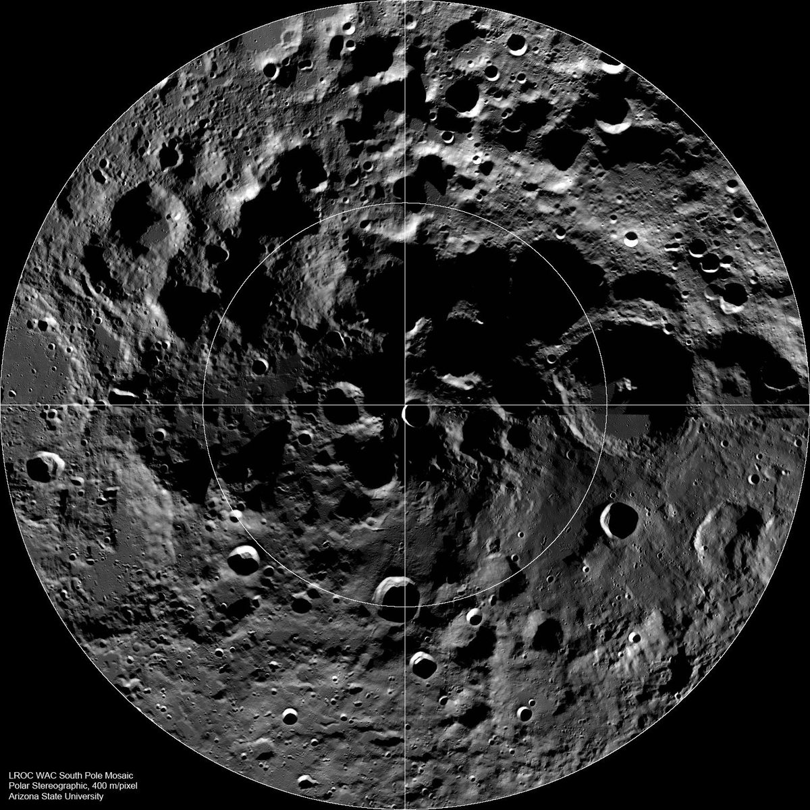
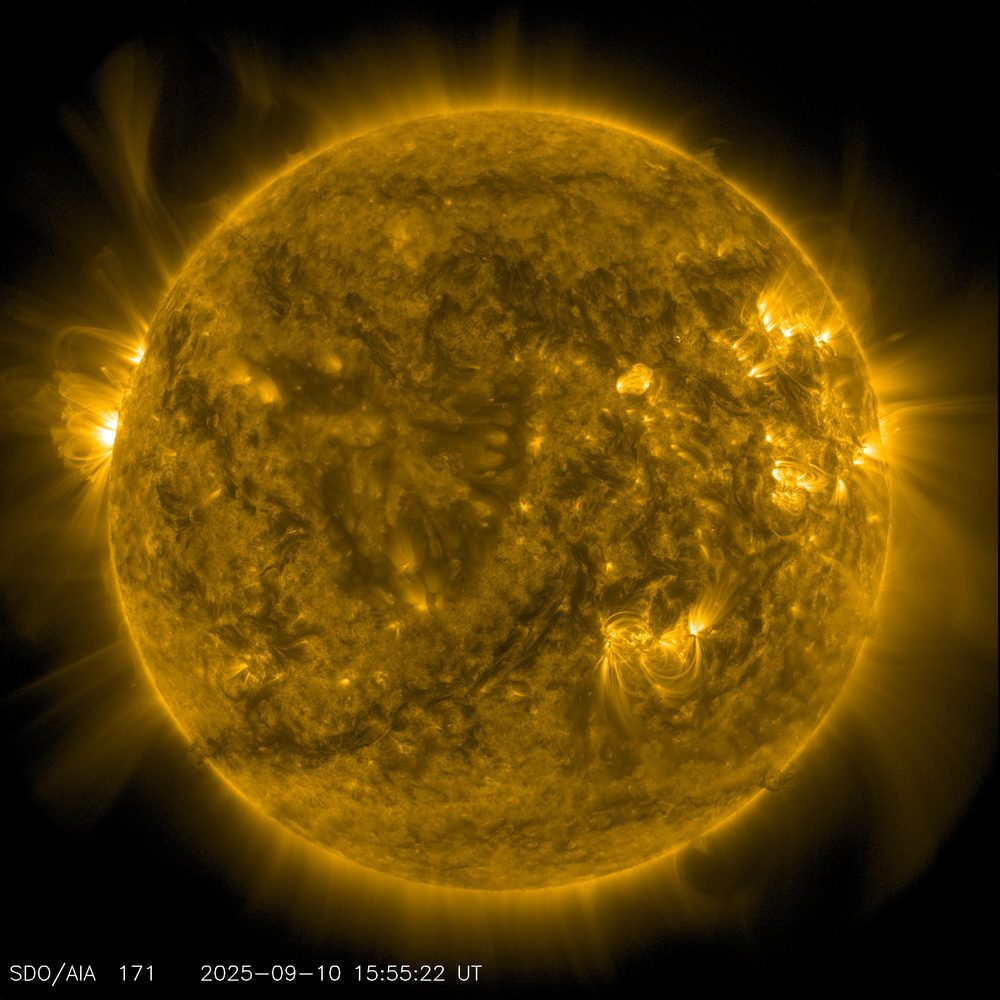
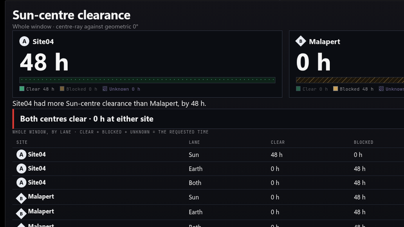
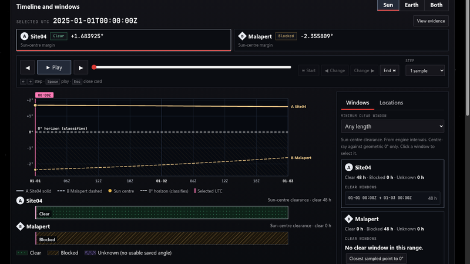

NASA Space Apps Challenge 2026
Is the Sun or Earth above the horizon at a lunar south-pole site?
Compare two sites sample by sample from saved JPL Horizons data. Every number traces to a saved row, and everything runs offline on this computer.
Earthrise, Apollo 8, 1968. Credit: NASA
A result from this release
January 3–10, 2025 UTC · geometric 0° horizon · 15-minute samples
Hours in which the centre of the Sun, and then both the Sun and Earth centres, were above 0° at each site. Practice inputs; terrain clearance is Unknown.
| Site | Sun centre clear | Both centres clear | Unknown |
|---|---|---|---|
| Malapert | 110 h 30 min | 110 h 30 min | 0 h |
| Site04 | 168 h | 92 h 45 min | 0 h |
Method: Horizons Quantity 4 apparent airless elevation of the target centre minus 0°. Sun, Earth and Both are separate lanes; Both is Clear only when each is Clear.

The two sites
Both are practice observers on the Moon, given to Horizons as geodetic longitude, latitude and height above the 1737.4 km reference sphere.
| Site | Latitude | Longitude E | Height |
|---|---|---|---|
| Malapert | −85.9900° | −2.9300° | 0 km |
| Site04 | −89.7812° | −156.4386° | 1.738902 km |
Site04 is about 7 km from the pole and Malapert about 120 km, from the saved latitudes. Malapert’s 0 km height is a practice value, not a reviewed surface height, so it stays an open item for terrain work.
What it checks
Two bodies, one horizon. The tool tests the centre of each against a flat 0° horizon and reports three lanes.

Both centres clear is Blocked if either centre is Blocked, Unknown if neither is Blocked and either is Unknown, and Clear only when both are Clear. A margin of 0° or less is Blocked.
Where to go next

Guide
Ten short steps: start the server, read a result, ask why, and check the evidence.
Start the guide →
Navigator
Compare the sites on one timeline. Inspect the saved Horizons row behind any sample.
Open the navigator →Manual and reference
Install and run it, call the API, follow the engine, and read the data and research notes.
Open the manual →What this release does not claim
A centre below the horizon can still leave part of the disc above that plane, and a clear centre says nothing about received power or a ground-station link. Terrain clearance is Unknown until a reviewed skyline passes the M4 check. Submission eligibility is a Lead decision that is still open. See project progress.